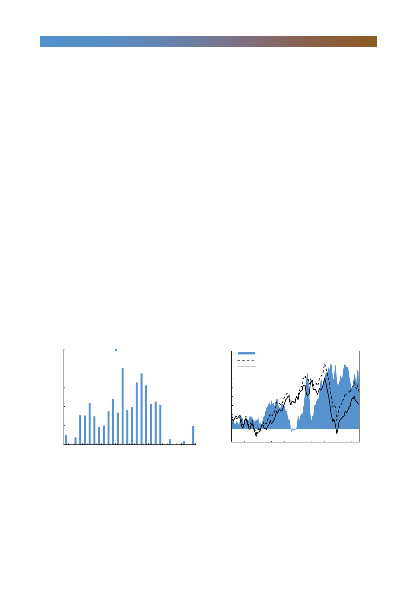

S-Oil(010950)
지나갈 악재와 다가올 호재 사이
대외적인 악재와 이례적으로 집중된 S-Oil의 정유 및 PX 설비보수를 반영한 올
해 적정주가는 78,000원이다(동종업계 ROE-PBR 분석 기준). 그러나 일회성
악재들이 사라지고 2020년 구조적 호재로 개선될 실적을 감안한 적정주가는
227,000원이다. 두 시점의 평균 적정 주가는 153,000원으로 현재 목표주가보다
높다. 지금은 곧 하반기를 시작하는 시점이고 8월에서 늦어도 9월부터는 IMO의
구조적 변화의 시기가 도래한다는 점에서 현재 목표주가를 유지한다.
2분기 영업이익 전망 가정
2분기 한달후행 정제마진은 유가 상승과 1분기 저렴한 유가가 원가로 투입되며
9달러/배럴로 전분기대비 64% 개선될 것으로 예상했었다. 그러나 5월 중순 이후
유가가 재차 하락하며 2분기 누적평균 한달후행 정제마진은 현재 5달러/배럴이
다. 1분기 저렴한 유가가 2분기로 이연 된 것을 감안하면 실질적인 한달후행 정
제마진은 7달러/배럴 수준으로 추정되나, 확대된 유가 변동성을 감안해 5달러/배
럴로 44% 하향 조정했다. 현재유가가 6월말까지 지속되면 재고평가손실이 900
억원 이상 발생할 수 있으나, 일회성 손실이며 유가의 변동성을 감안해 2분기 실
적에 반영하지 않았다. 한편 긍정적인 점은 신규 고도화설비인 RUC/ODC가 5월
마지막 주부터 한달간의 정기보수를 끝내고 정상가동을 시작했다. 현재 가동률은
80% 가까이 상승한 것으로 보여진다. 현재 기준 제품시황에 가동률 80%, 초기
가동에 발생할 수 있는 비용증가를 감안해도 6월에 기여할 수 있는 신규 고도화
설비의 영업이익은 200억원 수준으로 추정된다. 3분기부터는 600억원 이상 이익
기여를 할 수 있을 것으로 전망된다.
[그림 1] 무역분쟁으로 중국의 미국 원유도입 축소
(천톤)
2,500
중국의 미국 원유 수입량
2,000
1,500
1,000
500
0
Jan-17 Jun-17 Nov-17 Apr-18 Sep-18 Feb-19
자료: 블룸버그, 한국투자증권
[그림 2] 지정학적 위험까지 확대되며 Dubai 강세
(달러/배럴)
90
두바이유 - WTI 스프레드(우)
85
Dubai 유가(좌)
80
WTI 유가(좌)
75
70
65
60
55
50
45
40
Jan-17
Jul-17
Jan-18
Jul-18
(달러/배럴) 12
10
8
6
4
2
0
(2)
Jan-19
자료: 페트로넷, 한국투자증권
2